Lesespur: Ausdauer: der lange Atem – Lesespurgeschichte mit Rätseln (Klasse 8)

Lesespur: Baking Christmas Cookies – Lesespurgeschichte mit Rätseln auf Englisch (Klasse 8)

Lesespur: Bewusst konsumieren: die Reise eines T-Shirts – Lesespurgeschichte mit Rätseln (Klasse 8)

Lesespur: Das Akkordeon – Lesespurgeschichte mit Rätseln (Klasse 8)

Lesespur: Das Atom – Lesespurgeschichte mit Rätseln (Klasse 8)

Lesespur: Das Automobil – Lesespurgeschichte mit Rätseln (Klasse 8)
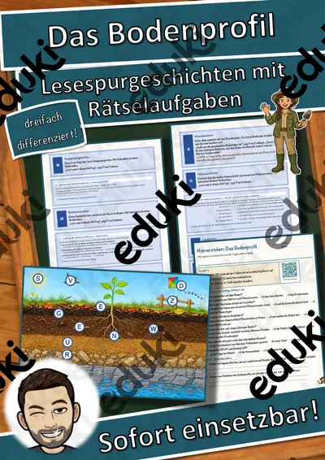
Lesespur: Das Bodenprofil – Lesespurgeschichte mit Rätseln (Klasse 8)
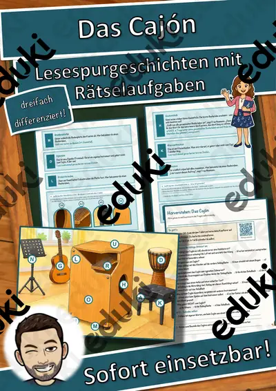
Lesespur: Das Cajón – Lesespurgeschichte mit Rätseln (Klasse 8)

Lesespur: Das Chamäleon – Lesespurgeschichte mit Rätseln (Klasse 8)

Lesespur: Das Containerschiff – Lesespurgeschichte mit Rätseln (Klasse 8)
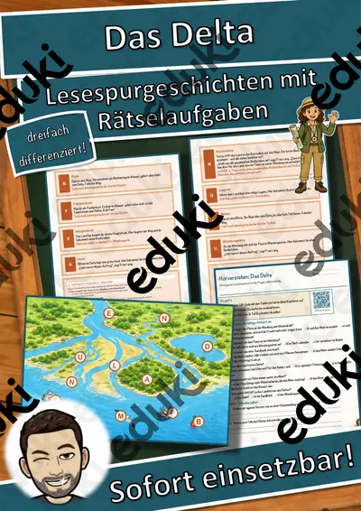
Lesespur: Das Delta – Lesespurgeschichte mit Rätseln (Klasse 8)

Lesespur: Das Deutsche Kaiserreich – Lesespurgeschichte mit Rätseln (Klasse 8)
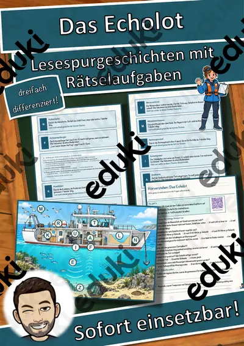
Lesespur: Das Echolot – Lesespurgeschichte mit Rätseln (Klasse 8)
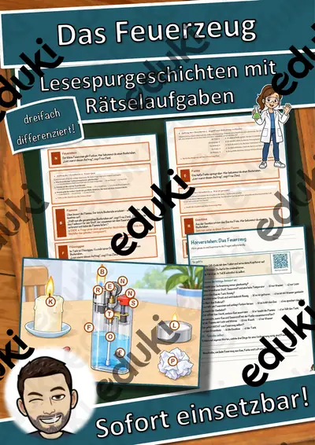
Lesespur: Das Feuerzeug – Lesespurgeschichte mit Rätseln (Klasse 8)
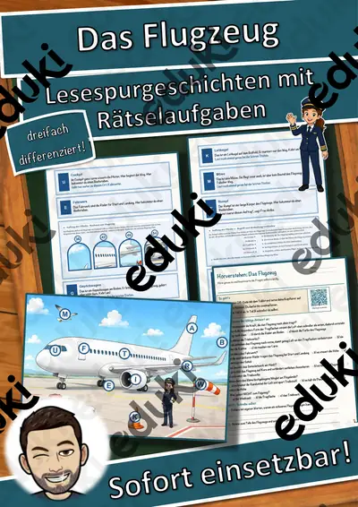
Lesespur: Das Flugzeug – Lesespurgeschichte mit Rätseln (Klasse 8)

Lesespur: Das Gewächshaus – Lesespurgeschichte mit Rätseln (Klasse 8)

Lesespur: Das Herz – Lesespurgeschichte mit Rätseln (Klasse 8)

Lesespur: Das Hochgebirge – Lesespurgeschichte mit Rätseln (Klasse 8)

Lesespur: Das Hochmoor – Lesespurgeschichte mit Rätseln (Klasse 8)

Lesespur: Das Immunsystem – Lesespurgeschichte mit Rätseln (Klasse 8)
Lesespur: Das Jugendschutzgesetz: Ausgehzeiten, Alkohol, Altersfreigaben – Lesespurgeschichte mit Rätseln (Klasse 8)
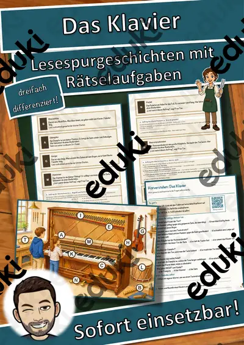
Lesespur: Das Klavier – Lesespurgeschichte mit Rätseln (Klasse 8)

Lesespur: Das Kniegelenk – Lesespurgeschichte mit Rätseln (Klasse 8)

Lesespur: Das Korallenriff – Lesespurgeschichte mit Rätseln (Klasse 8)

Lesespur: Das Krokodil – Lesespurgeschichte mit Rätseln (Klasse 8)
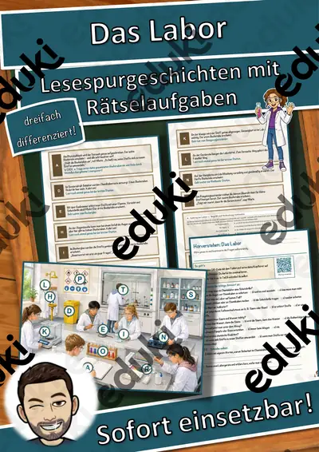
Lesespur: Das Labor – Lesespurgeschichte mit Rätseln (Klasse 8)

Lesespur: Das Luftschiff – Lesespurgeschichte mit Rätseln (Klasse 8)

Lesespur: Das Martinsfeuer: was ein Feuer braucht und wie man es löscht – Lesespurgeschichte mit Rätseln (Klasse 8)

Lesespur: Das Mikroskop – Lesespurgeschichte mit Rätseln (Klasse 8)

Lesespur: Das Moor – Lesespurgeschichte mit Rätseln (Klasse 8)

Lesespur: Das Musical: Singen, Spielen, Tanzen – Lesespurgeschichte mit Rätseln (Klasse 8)

Lesespur: Das Pumpspeicherkraftwerk – Lesespurgeschichte mit Rätseln (Klasse 8)
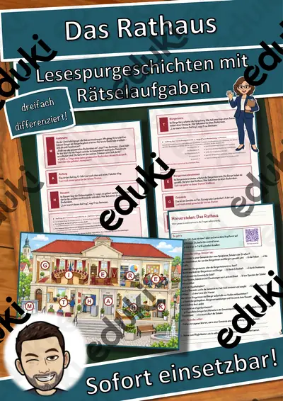
Lesespur: Das Rathaus – Lesespurgeschichte mit Rätseln (Klasse 8)

Lesespur: Das Reh – Lesespurgeschichte mit Rätseln (Klasse 8)

Lesespur: Das Salz – Lesespurgeschichte mit Rätseln (Klasse 8)
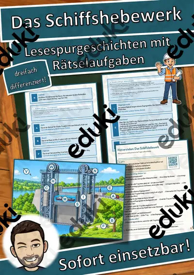
Lesespur: Das Schiffshebewerk – Lesespurgeschichte mit Rätseln (Klasse 8)

Lesespur: Das Schlagzeug – Lesespurgeschichte mit Rätseln (Klasse 8)

Lesespur: Das Segelschiff – Lesespurgeschichte mit Rätseln (Klasse 8)

Lesespur: Das Sinfonieorchester – Lesespurgeschichte mit Rätseln (Klasse 8)

Lesespur: Das Streichholz – Lesespurgeschichte mit Rätseln (Klasse 8)

Lesespur: Das Teleskop – Lesespurgeschichte mit Rätseln (Klasse 8)

Lesespur: Das Thermometer – Lesespurgeschichte mit Rätseln (Klasse 8)

Lesespur: Das Tiefdruckgebiet – Lesespurgeschichte mit Rätseln (Klasse 8)

Lesespur: Das U-Boot – Lesespurgeschichte mit Rätseln (Klasse 8)

Lesespur: Das Vibraphon – Lesespurgeschichte mit Rätseln (Klasse 8)

Lesespur: Das Vogelei – Lesespurgeschichte mit Rätseln (Klasse 8)

Lesespur: Das Wasserkraftwerk – Lesespurgeschichte mit Rätseln (Klasse 8)
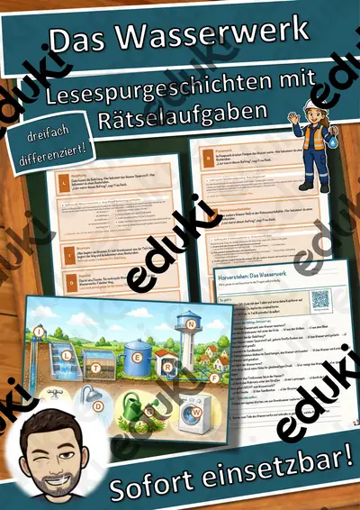
Lesespur: Das Wasserwerk – Lesespurgeschichte mit Rätseln (Klasse 8)

Lesespur: Das Wildschwein – Lesespurgeschichte mit Rätseln (Klasse 8)
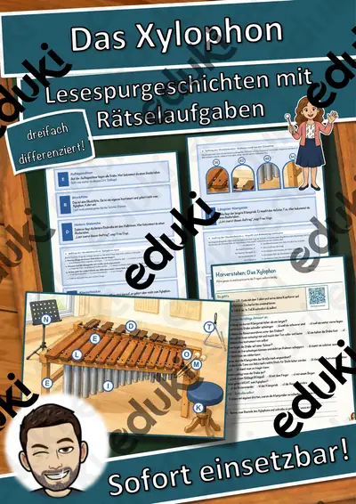
Lesespur: Das Xylophon – Lesespurgeschichte mit Rätseln (Klasse 8)

Lesespur: Das Zeitlabor: wie Uhren die Zeit messen und warum wir umstellen – Lesespurgeschichte mit Rätseln (Klasse 8)

Lesespur: Der Adler – Lesespurgeschichte mit Rätseln (Klasse 8)

Lesespur: Der Ameisenhaufen – Lesespurgeschichte mit Rätseln (Klasse 8)

Lesespur: Der Apfelbaum – Lesespurgeschichte mit Rätseln (Klasse 8)

Lesespur: Der Atombau – Lesespurgeschichte mit Rätseln (Klasse 8)

Lesespur: Der Aufzug – Lesespurgeschichte mit Rätseln (Klasse 8)

Lesespur: Der Backofen – Lesespurgeschichte mit Rätseln (Klasse 8)

Lesespur: Der Bagger – Lesespurgeschichte mit Rätseln (Klasse 8)

Lesespur: Der Baukran – Lesespurgeschichte mit Rätseln (Klasse 8)

Lesespur: Der Baumstamm – Lesespurgeschichte mit Rätseln (Klasse 8)

Lesespur: Der Bergsee – Lesespurgeschichte mit Rätseln (Klasse 8)

Lesespur: Der Biber – Lesespurgeschichte mit Rätseln (Klasse 8)
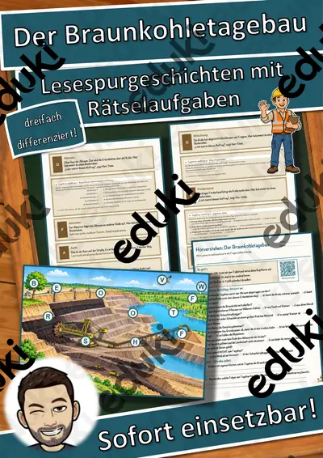
Lesespur: Der Braunkohletagebau – Lesespurgeschichte mit Rätseln (Klasse 8)
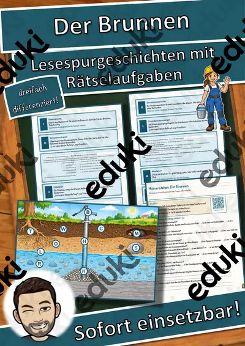
Lesespur: Der Brunnen – Lesespurgeschichte mit Rätseln (Klasse 8)
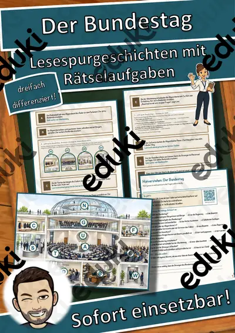
Lesespur: Der Bundestag – Lesespurgeschichte mit Rätseln (Klasse 8)

Lesespur: Der Bunsenbrenner – Lesespurgeschichte mit Rätseln (Klasse 8)

Lesespur: Der Bär – Lesespurgeschichte mit Rätseln (Klasse 8)

Lesespur: Der Canyon – Lesespurgeschichte mit Rätseln (Klasse 8)

Lesespur: Der Dachs – Lesespurgeschichte mit Rätseln (Klasse 8)

Lesespur: Der Deich – Lesespurgeschichte mit Rätseln (Klasse 8)

Lesespur: Der Delfin – Lesespurgeschichte mit Rätseln (Klasse 8)

Lesespur: Der Dickdarm – Lesespurgeschichte mit Rätseln (Klasse 8)

Lesespur: Der Dudelsack – Lesespurgeschichte mit Rätseln (Klasse 8)
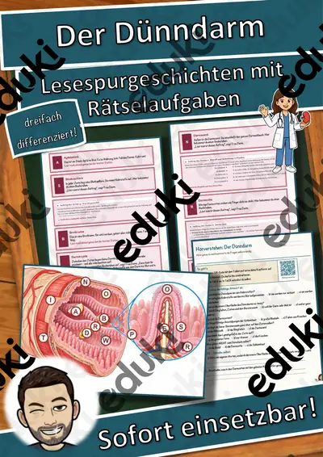
Lesespur: Der Dünndarm – Lesespurgeschichte mit Rätseln (Klasse 8)

Lesespur: Der Eisberg – Lesespurgeschichte mit Rätseln (Klasse 8)

Lesespur: Der Elektromotor – Lesespurgeschichte mit Rätseln (Klasse 8)

Lesespur: Der Fahrraddynamo – Lesespurgeschichte mit Rätseln (Klasse 8)

Lesespur: Der Fallschirm – Lesespurgeschichte mit Rätseln (Klasse 8)
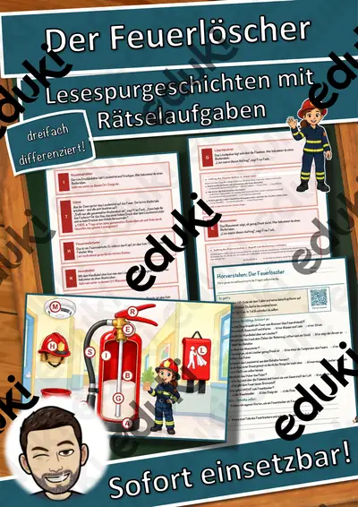
Lesespur: Der Feuerlöscher – Lesespurgeschichte mit Rätseln (Klasse 8)

Lesespur: Der Feuersalamander – Lesespurgeschichte mit Rätseln (Klasse 8)
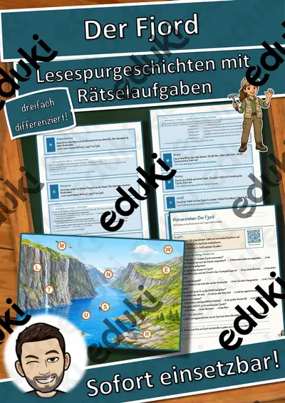
Lesespur: Der Fjord – Lesespurgeschichte mit Rätseln (Klasse 8)

Lesespur: Der Fliegenpilz – Lesespurgeschichte mit Rätseln (Klasse 8)

Lesespur: Der Flughafen – Lesespurgeschichte mit Rätseln (Klasse 8)

Lesespur: Der Fluss – Lesespurgeschichte mit Rätseln (Klasse 8)

Lesespur: Der Fotoapparat – Lesespurgeschichte mit Rätseln (Klasse 8)

Lesespur: Der Fuchs – Lesespurgeschichte mit Rätseln (Klasse 8)

Lesespur: Der Gasbrenner – Lesespurgeschichte mit Rätseln (Klasse 8)

Lesespur: Der Geysir – Lesespurgeschichte mit Rätseln (Klasse 8)

Lesespur: Der Gletscher – Lesespurgeschichte mit Rätseln (Klasse 8)

Lesespur: Der Haartrockner – Lesespurgeschichte mit Rätseln (Klasse 8)

Lesespur: Der Hafen – Lesespurgeschichte mit Rätseln (Klasse 8)

Lesespur: Der Hai – Lesespurgeschichte mit Rätseln (Klasse 8)

Lesespur: Der Hamster – Lesespurgeschichte mit Rätseln (Klasse 8)

Lesespur: Der Hase – Lesespurgeschichte mit Rätseln (Klasse 8)
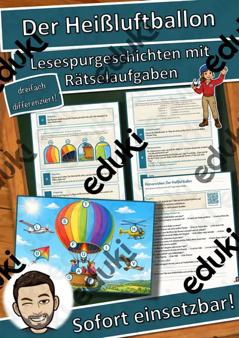
Lesespur: Der Heißluftballon – Lesespurgeschichte mit Rätseln (Klasse 8)

Lesespur: Der Hirsch – Lesespurgeschichte mit Rätseln (Klasse 8)

Lesespur: Der Hirschkäfer – Lesespurgeschichte mit Rätseln (Klasse 8)

Lesespur: Der Hubschrauber – Lesespurgeschichte mit Rätseln (Klasse 8)

Lesespur: Der Hummer – Lesespurgeschichte mit Rätseln (Klasse 8)

Lesespur: Der Kaktus – Lesespurgeschichte mit Rätseln (Klasse 8)

Lesespur: Der Kaminofen: Verbrennung und Kohlenmonoxid – Lesespurgeschichte mit Rätseln (Klasse 8)

Lesespur: Der Kehlkopf – Lesespurgeschichte mit Rätseln (Klasse 8)

Lesespur: Der Klimawandel – Lesespurgeschichte mit Rätseln (Klasse 8)

Lesespur: Der Knochen – Lesespurgeschichte mit Rätseln (Klasse 8)

Lesespur: Der Kompass – Lesespurgeschichte mit Rätseln (Klasse 8)

Lesespur: Der Kompost – Lesespurgeschichte mit Rätseln (Klasse 8)

Lesespur: Der Komposthaufen – Lesespurgeschichte mit Rätseln (Klasse 8)

Lesespur: Der Konzertsaal – Lesespurgeschichte mit Rätseln (Klasse 8)

Lesespur: Der Kran – Lesespurgeschichte mit Rätseln (Klasse 8)

Lesespur: Der Kranich – Lesespurgeschichte mit Rätseln (Klasse 8)

Lesespur: Der Kühlschrank – Lesespurgeschichte mit Rätseln (Klasse 8)

Lesespur: Der Lachs – Lesespurgeschichte mit Rätseln (Klasse 8)

Lesespur: Der Leserbrief: meine Meinung in der Zeitung – Lesespurgeschichte mit Rätseln (Klasse 8)

Lesespur: Der Leuchtturm – Lesespurgeschichte mit Rätseln (Klasse 8)

Lesespur: Der Luchs – Lesespurgeschichte mit Rätseln (Klasse 8)

Lesespur: Der Löwenzahn – Lesespurgeschichte mit Rätseln (Klasse 8)

Lesespur: Der Magen – Lesespurgeschichte mit Rätseln (Klasse 8)

Lesespur: Der Mais – Lesespurgeschichte mit Rätseln (Klasse 8)

Lesespur: Der Meeresboden – Lesespurgeschichte mit Rätseln (Klasse 8)

Lesespur: Der Muskel – Lesespurgeschichte mit Rätseln (Klasse 8)

Lesespur: Der Mäander – Lesespurgeschichte mit Rätseln (Klasse 8)

Lesespur: Der Mähdrescher – Lesespurgeschichte mit Rätseln (Klasse 8)

Lesespur: Der Nebel – Lesespurgeschichte mit Rätseln (Klasse 8)

Lesespur: Der Pinguin – Lesespurgeschichte mit Rätseln (Klasse 8)

Lesespur: Der Plattenspieler – Lesespurgeschichte mit Rätseln (Klasse 8)
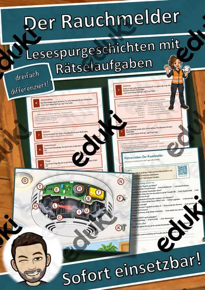
Lesespur: Der Rauchmelder – Lesespurgeschichte mit Rätseln (Klasse 8)

Lesespur: Der Regenwurm – Lesespurgeschichte mit Rätseln (Klasse 8)

Lesespur: Der Satellit – Lesespurgeschichte mit Rätseln (Klasse 8)

Lesespur: Der Schnellkochtopf – Lesespurgeschichte mit Rätseln (Klasse 8)

Lesespur: Der Schulserver – Lesespurgeschichte mit Rätseln (Klasse 8)

Lesespur: Der Schädel – Lesespurgeschichte mit Rätseln (Klasse 8)
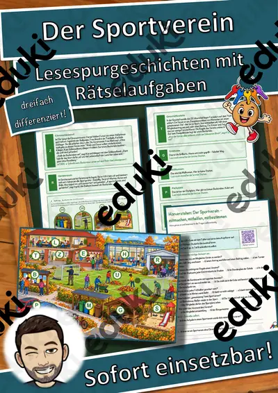
Lesespur: Der Sportverein: mitmachen, mithelfen, mitbestimmen – Lesespurgeschichte mit Rätseln (Klasse 8)

Lesespur: Der Staubsauger – Lesespurgeschichte mit Rätseln (Klasse 8)

Lesespur: Der Steinbruch – Lesespurgeschichte mit Rätseln (Klasse 8)

Lesespur: Der Storch – Lesespurgeschichte mit Rätseln (Klasse 8)

Lesespur: Der Tintenfisch – Lesespurgeschichte mit Rätseln (Klasse 8)

Lesespur: Der Toaster – Lesespurgeschichte mit Rätseln (Klasse 8)

Lesespur: Der Tsunami – Lesespurgeschichte mit Rätseln (Klasse 8)

Lesespur: Der Tunnel – Lesespurgeschichte mit Rätseln (Klasse 8)
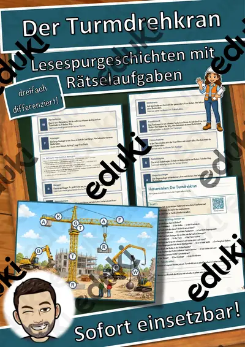
Lesespur: Der Turmdrehkran – Lesespurgeschichte mit Rätseln (Klasse 8)
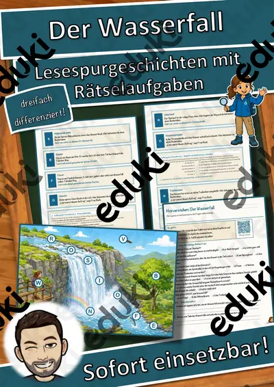
Lesespur: Der Wasserfall – Lesespurgeschichte mit Rätseln (Klasse 8)

Lesespur: Der Wasserkocher – Lesespurgeschichte mit Rätseln (Klasse 8)

Lesespur: Der Wasserturm – Lesespurgeschichte mit Rätseln (Klasse 8)

Lesespur: Der Weizen – Lesespurgeschichte mit Rätseln (Klasse 8)
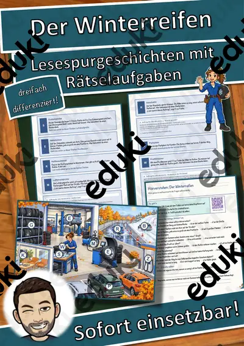
Lesespur: Der Winterreifen – Lesespurgeschichte mit Rätseln (Klasse 8)

Lesespur: Der Wolf – Lesespurgeschichte mit Rätseln (Klasse 8)

Lesespur: Der Zahn – Lesespurgeschichte mit Rätseln (Klasse 8)

Lesespur: Der Zukunftstag – Lesespurgeschichte mit Rätseln (Klasse 8)

Lesespur: Die Achterbahn – Lesespurgeschichte mit Rätseln (Klasse 8)

Lesespur: Die Ameise – Lesespurgeschichte mit Rätseln (Klasse 8)

Lesespur: Die Amsel – Lesespurgeschichte mit Rätseln (Klasse 8)

Lesespur: Die Atmosphäre – Lesespurgeschichte mit Rätseln (Klasse 8)

Lesespur: Die Bakterien – Lesespurgeschichte mit Rätseln (Klasse 8)

Lesespur: Die Bakterienzelle – Lesespurgeschichte mit Rätseln (Klasse 8)

Lesespur: Die Balkenwaage – Lesespurgeschichte mit Rätseln (Klasse 8)

Lesespur: Die Bank – Lesespurgeschichte mit Rätseln (Klasse 8)

Lesespur: Die Bauchspeicheldrüse – Lesespurgeschichte mit Rätseln (Klasse 8)

Lesespur: Die Bestäubung – Lesespurgeschichte mit Rätseln (Klasse 9)

Lesespur: Die Biberburg – Lesespurgeschichte mit Rätseln (Klasse 8)
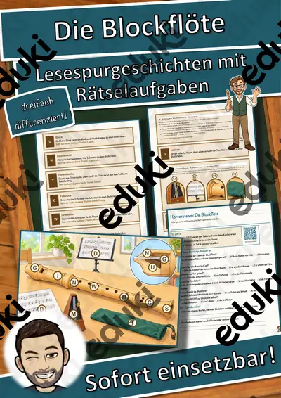
Lesespur: Die Blockflöte – Lesespurgeschichte mit Rätseln (Klasse 8)
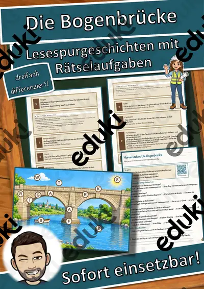
Lesespur: Die Bogenbrücke – Lesespurgeschichte mit Rätseln (Klasse 8)

Lesespur: Die Chromatographie – Lesespurgeschichte mit Rätseln (Klasse 8)

Lesespur: Die Dampflokomotive – Lesespurgeschichte mit Rätseln (Klasse 8)
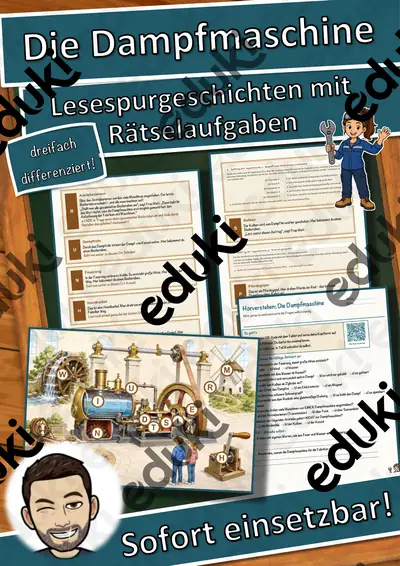
Lesespur: Die Dampfmaschine – Lesespurgeschichte mit Rätseln (Klasse 8)

Lesespur: Die Destillation – Lesespurgeschichte mit Rätseln (Klasse 8)

Lesespur: Die Eiche – Lesespurgeschichte mit Rätseln (Klasse 8)

Lesespur: Die Eisenbahn verändert das Land – Lesespurgeschichte mit Rätseln (Klasse 8)

Lesespur: Die Entsalzungsanlage – Lesespurgeschichte mit Rätseln (Klasse 8)

Lesespur: Die Erde – Lesespurgeschichte mit Rätseln (Klasse 8)

Lesespur: Die Erdkröte – Lesespurgeschichte mit Rätseln (Klasse 8)

Lesespur: Die Eule – Lesespurgeschichte mit Rätseln (Klasse 8)

Lesespur: Die Fahrradpumpe – Lesespurgeschichte mit Rätseln (Klasse 8)

Lesespur: Die Filtration – Lesespurgeschichte mit Rätseln (Klasse 8)

Lesespur: Die Fotosynthese – Lesespurgeschichte mit Rätseln (Klasse 8)

Lesespur: Die Französische Revolution – Lesespurgeschichte mit Rätseln (Klasse 8)

Lesespur: Die Färberei – Lesespurgeschichte mit Rätseln (Klasse 8)

Lesespur: Die Geige – Lesespurgeschichte mit Rätseln (Klasse 8)

Lesespur: Die Gitarre – Lesespurgeschichte mit Rätseln (Klasse 8)

Lesespur: Die Glashütte – Lesespurgeschichte mit Rätseln (Klasse 8)

Lesespur: Die Glühlampe – Lesespurgeschichte mit Rätseln (Klasse 8)

Lesespur: Die Gärung – Lesespurgeschichte mit Rätseln (Klasse 8)

Lesespur: Die Harfe – Lesespurgeschichte mit Rätseln (Klasse 8)

Lesespur: Die Haut – Lesespurgeschichte mit Rätseln (Klasse 8)

Lesespur: Die Hecke – Lesespurgeschichte mit Rätseln (Klasse 8)

Lesespur: Die Heuschrecke – Lesespurgeschichte mit Rätseln (Klasse 8)
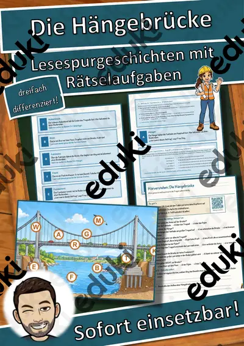
Lesespur: Die Hängebrücke – Lesespurgeschichte mit Rätseln (Klasse 8)

Lesespur: Die Höhle – Lesespurgeschichte mit Rätseln (Klasse 8)
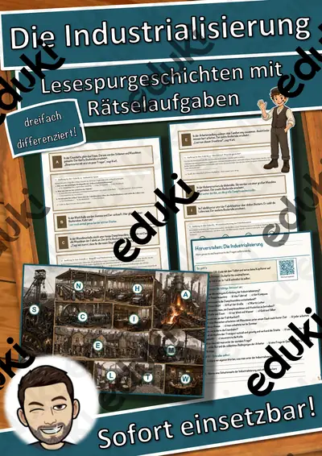
Lesespur: Die Industrialisierung – Lesespurgeschichte mit Rätseln (Klasse 8)

Lesespur: Die Inventur: zählen, wiegen, vergleichen – Lesespurgeschichte mit Rätseln (Klasse 8)

Lesespur: Die Kaffeerösterei – Lesespurgeschichte mit Rätseln (Klasse 8)

Lesespur: Die Kerze – Lesespurgeschichte mit Rätseln (Klasse 8)

Lesespur: Die Kieme – Lesespurgeschichte mit Rätseln (Klasse 8)

Lesespur: Die Kirchenorgel – Lesespurgeschichte mit Rätseln (Klasse 8)

Lesespur: Die Klappbrücke – Lesespurgeschichte mit Rätseln (Klasse 8)

Lesespur: Die Kläranlage – Lesespurgeschichte mit Rätseln (Klasse 8)

Lesespur: Die Konservenfabrik – Lesespurgeschichte mit Rätseln (Klasse 8)

Lesespur: Die Lawine – Lesespurgeschichte mit Rätseln (Klasse 8)

Lesespur: Die Libelle – Lesespurgeschichte mit Rätseln (Klasse 8)

Lesespur: Die Lichterkette: Reihenschaltung und Parallelschaltung – Lesespurgeschichte mit Rätseln (Klasse 8)

Lesespur: Die Lunge – Lesespurgeschichte mit Rätseln (Klasse 8)

Lesespur: Die Mangrove – Lesespurgeschichte mit Rätseln (Klasse 8)

Lesespur: Die Molkerei – Lesespurgeschichte mit Rätseln (Klasse 8)

Lesespur: Die Muschel – Lesespurgeschichte mit Rätseln (Klasse 8)

Lesespur: Die Märzrevolution 1848: Freiheit, Einheit und die Paulskirche – Lesespurgeschichte mit Rätseln (Klasse 8)

Lesespur: Die Nase – Lesespurgeschichte mit Rätseln (Klasse 8)

Lesespur: Die Niere – Lesespurgeschichte mit Rätseln (Klasse 8)

Lesespur: Die Nähmaschine – Lesespurgeschichte mit Rätseln (Klasse 8)

Lesespur: Die Oase – Lesespurgeschichte mit Rätseln (Klasse 8)
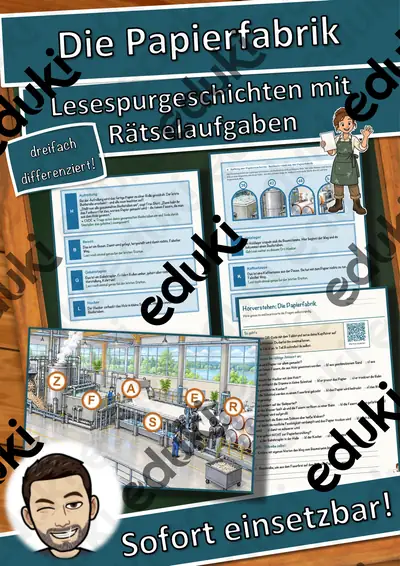
Lesespur: Die Papierfabrik – Lesespurgeschichte mit Rätseln (Klasse 8)

Lesespur: Die Pauke – Lesespurgeschichte mit Rätseln (Klasse 8)

Lesespur: Die Pflanzenzelle – Lesespurgeschichte mit Rätseln (Klasse 8)

Lesespur: Die Posaune – Lesespurgeschichte mit Rätseln (Klasse 8)

Lesespur: Die Raumfahrt – Lesespurgeschichte mit Rätseln (Klasse 8)

Lesespur: Die Rolltreppe – Lesespurgeschichte mit Rätseln (Klasse 8)

Lesespur: Die Saline – Lesespurgeschichte mit Rätseln (Klasse 8)

Lesespur: Die Sanddüne – Lesespurgeschichte mit Rätseln (Klasse 8)

Lesespur: Die Sanduhr – Lesespurgeschichte mit Rätseln (Klasse 8)

Lesespur: Die Savanne – Lesespurgeschichte mit Rätseln (Klasse 8)

Lesespur: Die Schildkröte – Lesespurgeschichte mit Rätseln (Klasse 8)

Lesespur: Die Schleuse – Lesespurgeschichte mit Rätseln (Klasse 8)

Lesespur: Die Schlucht – Lesespurgeschichte mit Rätseln (Klasse 8)

Lesespur: Die Schokoladenfabrik – Lesespurgeschichte mit Rätseln (Klasse 8)

Lesespur: Die Seifensiederei – Lesespurgeschichte mit Rätseln (Klasse 8)

Lesespur: Die Seilbahn – Lesespurgeschichte mit Rätseln (Klasse 8)
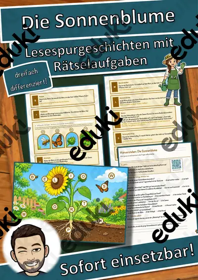
Lesespur: Die Sonnenblume – Lesespurgeschichte mit Rätseln (Klasse 8)

Lesespur: Die Steilküste – Lesespurgeschichte mit Rätseln (Klasse 8)

Lesespur: Die Taiga – Lesespurgeschichte mit Rätseln (Klasse 8)
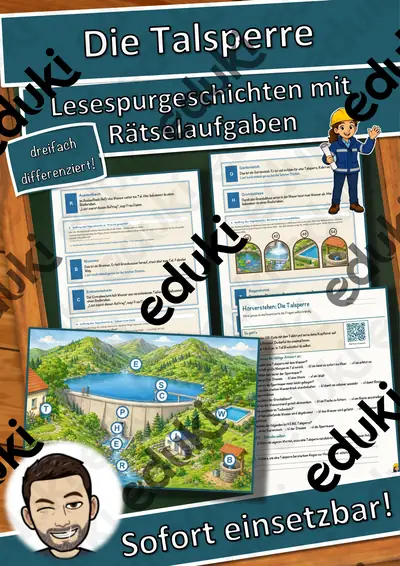
Lesespur: Die Talsperre – Lesespurgeschichte mit Rätseln (Klasse 8)

Lesespur: Die Taschenlampe – Lesespurgeschichte mit Rätseln (Klasse 8)
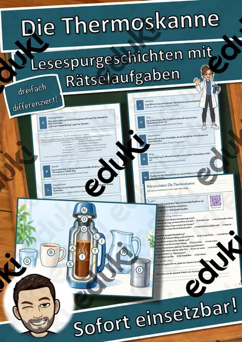
Lesespur: Die Thermoskanne – Lesespurgeschichte mit Rätseln (Klasse 8)

Lesespur: Die Tierzelle – Lesespurgeschichte mit Rätseln (Klasse 8)

Lesespur: Die Trompete – Lesespurgeschichte mit Rätseln (Klasse 8)

Lesespur: Die Tropfsteinhöhle – Lesespurgeschichte mit Rätseln (Klasse 8)

Lesespur: Die Tulpe – Lesespurgeschichte mit Rätseln (Klasse 8)

Lesespur: Die Tundra – Lesespurgeschichte mit Rätseln (Klasse 8)
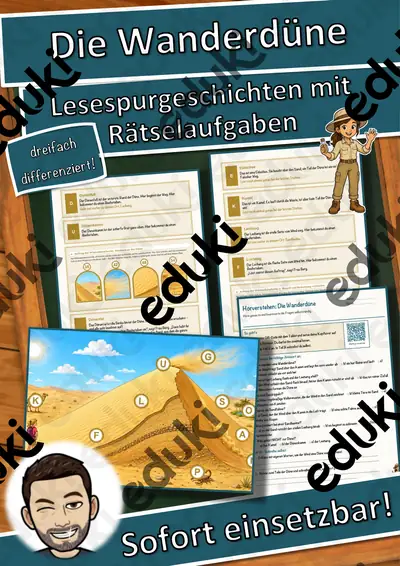
Lesespur: Die Wanderdüne – Lesespurgeschichte mit Rätseln (Klasse 8)

Lesespur: Die Waschmaschine – Lesespurgeschichte mit Rätseln (Klasse 8)

Lesespur: Die Weimarer Republik – Lesespurgeschichte mit Rätseln (Klasse 8)

Lesespur: Die Wiener Klassik: Haydn, Mozart, Beethoven – Lesespurgeschichte mit Rätseln (Klasse 8)

Lesespur: Die Windkraft – Lesespurgeschichte mit Rätseln (Klasse 8)

Lesespur: Die Windkraftanlage – Lesespurgeschichte mit Rätseln (Klasse 8)

Lesespur: Die Windmühle – Lesespurgeschichte mit Rätseln (Klasse 8)

Lesespur: Die Wirbelsäule – Lesespurgeschichte mit Rätseln (Klasse 8)

Lesespur: Die Wurzel – Lesespurgeschichte mit Rätseln (Klasse 8)

Lesespur: Die Zeitungsredaktion – Lesespurgeschichte mit Rätseln (Klasse 8)

Lesespur: Die Zelle – Lesespurgeschichte mit Rätseln (Klasse 8)

Lesespur: Die Zentralheizung – Lesespurgeschichte mit Rätseln (Klasse 8)

Lesespur: Die Zuckerfabrik – Lesespurgeschichte mit Rätseln (Klasse 8)

Lesespur: Die Zunge – Lesespurgeschichte mit Rätseln (Klasse 8)

Lesespur: Die chemische Reaktion – Lesespurgeschichte mit Rätseln (Klasse 8)
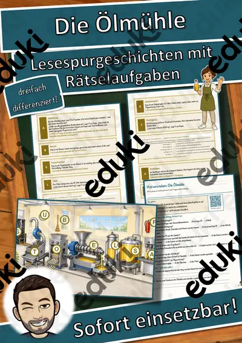
Lesespur: Die Ölmühle – Lesespurgeschichte mit Rätseln (Klasse 8)
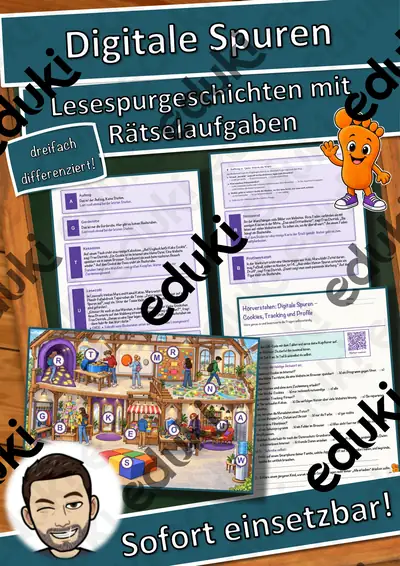
Lesespur: Digitale Spuren: Cookies, Tracking und Profile – Lesespurgeschichte mit Rätseln (Klasse 8)

Lesespur: Ein Festtagsmenü planen: Einkauf, Mengen und Zeitplan – Lesespurgeschichte mit Rätseln (Klasse 8)
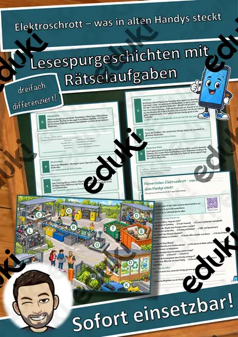
Lesespur: Elektroschrott: was in alten Handys steckt – Lesespurgeschichte mit Rätseln (Klasse 8)

Lesespur: Erste Hilfe bei Kälte: Unterkühlung und Erfrierungen – Lesespurgeschichte mit Rätseln (Klasse 8)

Lesespur: Farbwirkung und Farbpsychologie: was Farben mit uns machen – Lesespurgeschichte mit Rätseln (Klasse 8)

Lesespur: Fast Fashion: der Weg einer Jeans – Lesespurgeschichte mit Rätseln (Klasse 8)
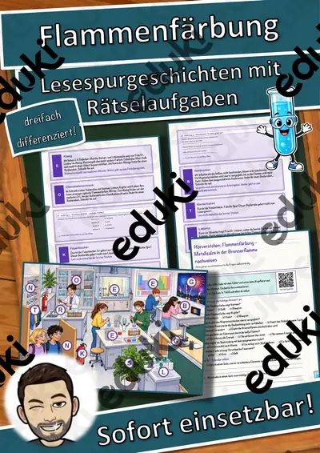
Lesespur: Flammenfärbung: Metallsalze in der Brennerflamme nachweisen – Lesespurgeschichte mit Rätseln (Klasse 8)

Lesespur: Geschichte der Informatik: Rundgang durchs Computermuseum – Lesespurgeschichte mit Rätseln (Klasse 8)

Lesespur: Gute Vorsätze: was ich ändern will – Lesespurgeschichte mit Rätseln (Klasse 8)

Lesespur: Handwärmer: wie Wärme aus der Tasche entsteht – Lesespurgeschichte mit Rätseln (Klasse 8)

Lesespur: Improvisation: Musik aus dem Moment – Lesespurgeschichte mit Rätseln (Klasse 8)

Lesespur: Inklusion im Sport: Para-Sport ausprobieren – Lesespurgeschichte mit Rätseln (Klasse 8)

Lesespur: Kampfsport und Respekt: fair kämpfen nach Regeln – Lesespurgeschichte mit Rätseln (Klasse 8)

Lesespur: Krippenbau: eine Weihnachtskrippe entwerfen und gestalten – Lesespurgeschichte mit Rätseln (Klasse 8)

Lesespur: Landschaftsmalerei: Natur im Bild – Lesespurgeschichte mit Rätseln (Klasse 8)

Lesespur: Licht und Schatten: Körper plastisch zeichnen – Lesespurgeschichte mit Rätseln (Klasse 8)

Lesespur: Lunar New Year at Lin's Home – Lesespurgeschichte mit Rätseln auf Englisch (Klasse 8)

Lesespur: Löten: meine erste Schaltung – Lesespurgeschichte mit Rätseln (Klasse 8)

Lesespur: Messen, Steuern, Regeln: das Gewächshaus mit Mikrocontroller – Lesespurgeschichte mit Rätseln (Klasse 8)

Lesespur: Navigation: den kürzesten Weg berechnen – Lesespurgeschichte mit Rätseln (Klasse 8)

Lesespur: Online einkaufen: Widerrufsrecht, Fake-Shops und Rabattfallen – Lesespurgeschichte mit Rätseln (Klasse 8)
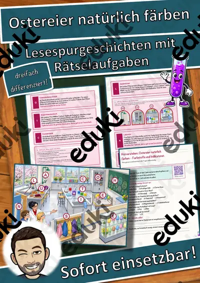
Lesespur: Ostereier natürlich färben: Farbstoffe und Indikatoren – Lesespurgeschichte mit Rätseln (Klasse 8)
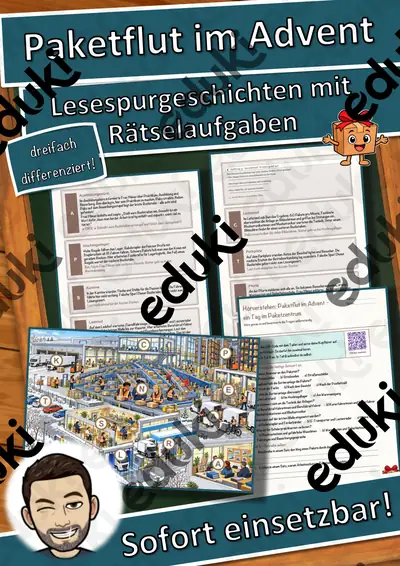
Lesespur: Paketflut im Advent: ein Tag im Paketzentrum – Lesespurgeschichte mit Rätseln (Klasse 8)

Lesespur: Plakat und Typografie: Gestalten mit Schrift und Bild – Lesespurgeschichte mit Rätseln (Klasse 8)
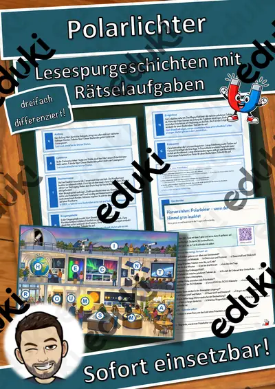
Lesespur: Polarlichter: wenn der Himmel grün leuchtet – Lesespurgeschichte mit Rätseln (Klasse 8)
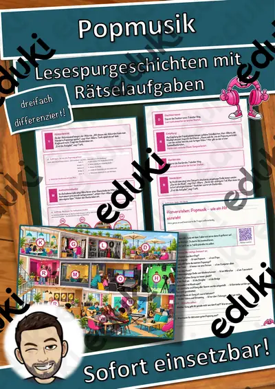
Lesespur: Popmusik: wie ein Hit entsteht – Lesespurgeschichte mit Rätseln (Klasse 8)

Lesespur: Samba, Reggae & Co.: Musik aus Lateinamerika und der Karibik – Lesespurgeschichte mit Rätseln (Klasse 8)

Lesespur: Secrets of the Chestnut Tree – Lesespurgeschichte mit Rätseln auf Englisch (Klasse 8)

Lesespur: Sich für andere einsetzen – Lesespurgeschichte mit Rätseln (Klasse 8)

Lesespur: Skilanglauf und Biathlon: gleiten, laufen, zielen – Lesespurgeschichte mit Rätseln (Klasse 8)

Lesespur: Smart Home: das vernetzte Haus – Lesespurgeschichte mit Rätseln (Klasse 8)

Lesespur: Social Media: wie der Feed ausgewählt wird – Lesespurgeschichte mit Rätseln (Klasse 8)

Lesespur: Streusalz und Gefrierpunkt: warum Salz Eis schmelzen lässt – Lesespurgeschichte mit Rätseln (Klasse 8)
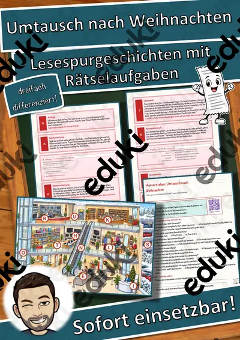
Lesespur: Umtausch nach Weihnachten: Gewährleistung, Garantie und Kulanz – Lesespurgeschichte mit Rätseln (Klasse 8)

Lesespur: Verantwortung in der digitalen Welt – Lesespurgeschichte mit Rätseln (Klasse 8)

Lesespur: Vincent van Gogh: Farbe und Pinselstrich – Lesespurgeschichte mit Rätseln (Klasse 8)

Lesespur: Volleyball: pritschen, baggern, schmettern – Lesespurgeschichte mit Rätseln (Klasse 8)

Lesespur: Warm eingepackt: wie Dämmung ein Haus schützt – Lesespurgeschichte mit Rätseln (Klasse 8)

Lesespur: Werbung erkennen: wie sie wirkt und was dahintersteckt – Lesespurgeschichte mit Rätseln (Klasse 8)

Lesespur: Winterblues: warum uns im Winter das Licht fehlt – Lesespurgeschichte mit Rätseln (Klasse 8)

Lesespur: Wofür lohnt es sich zu leben?: Sinnsuche im Jugendalter – Lesespurgeschichte mit Rätseln (Klasse 8)

Lesespur: Woher kommt mein Spielzeug: die Weltreise eines Spielzeugautos – Lesespurgeschichte mit Rätseln (Klasse 8)
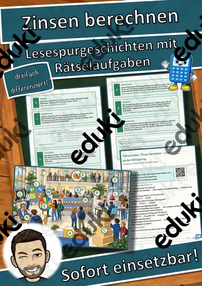
Lesespur: Zinsen berechnen: rund um den Weltspartag – Lesespurgeschichte mit Rätseln (Klasse 8)

Lesespur: Älter werden: Rechte und Pflichten im Jugendalter – Lesespurgeschichte mit Rätseln (Klasse 8)

Materialpaket Lesespurgeschichten Biologie Klasse 8 – Der Mensch: 18 Lesespuren mit Rätselaufgaben, dreifach differenziert
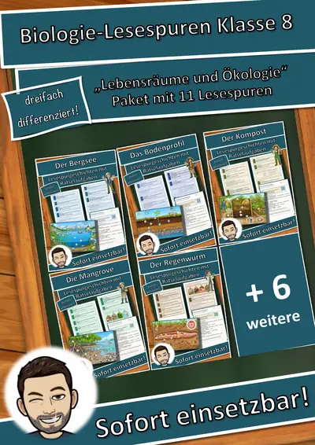
Materialpaket Lesespurgeschichten Biologie Klasse 8 – Lebensräume und Ökologie: 11 Lesespuren mit Rätselaufgaben, dreifach differenziert

Materialpaket Lesespurgeschichten Biologie Klasse 8 – Pflanzen und Pilze: 12 Lesespuren mit Rätselaufgaben, dreifach differenziert

Materialpaket Lesespurgeschichten Biologie Klasse 8 – Tiere: Säugetiere und Vögel: 19 Lesespuren mit Rätselaufgaben, dreifach differenziert

Materialpaket Lesespurgeschichten Biologie Klasse 8 – Zellen und Bakterien: 5 Lesespuren mit Rätselaufgaben, dreifach differenziert

Materialpaket Lesespurgeschichten Chemie Klasse 8 – Chemie in Betrieb und Alltag: 13 Lesespuren mit Rätselaufgaben, dreifach differenziert
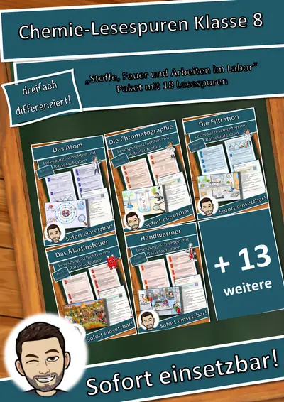
Materialpaket Lesespurgeschichten Chemie Klasse 8 – Stoffe, Feuer und Arbeiten im Labor: 18 Lesespuren mit Rätselaufgaben, dreifach differenziert
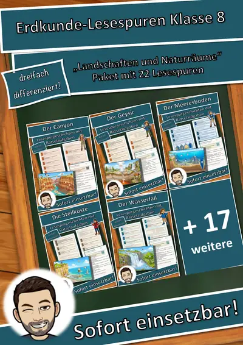
Materialpaket Lesespurgeschichten Erdkunde Klasse 8 – Landschaften und Naturräume: 22 Lesespuren mit Rätselaufgaben, dreifach differenziert

Materialpaket Lesespurgeschichten Erdkunde Klasse 8 – Mensch, Wasser und Wirtschaft: 18 Lesespuren mit Rätselaufgaben, dreifach differenziert

Materialpaket Lesespurgeschichten Erdkunde Klasse 8 – Wetter, Klima und Naturgefahren: 5 Lesespuren mit Rätselaufgaben, dreifach differenziert

Materialpaket Lesespurgeschichten Ethik Klasse 8: 6 Lesespuren mit Rätselaufgaben, dreifach differenziert

Materialpaket Lesespurgeschichten Geschichte Klasse 8: 6 Lesespuren mit Rätselaufgaben, dreifach differenziert

Materialpaket Lesespurgeschichten Informatik Klasse 8: 7 Lesespuren mit Rätselaufgaben, dreifach differenziert
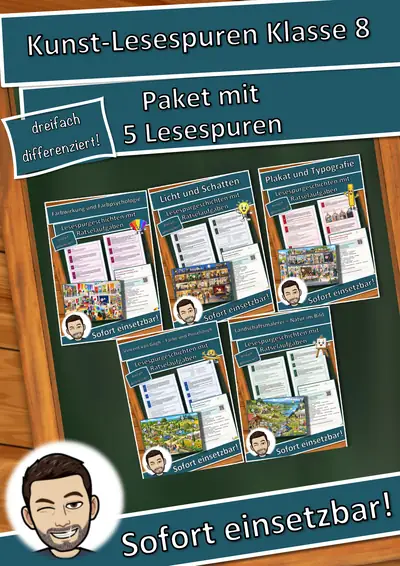
Materialpaket Lesespurgeschichten Kunst Klasse 8: 5 Lesespuren mit Rätselaufgaben, dreifach differenziert

Materialpaket Lesespurgeschichten Musik Klasse 8: 22 Lesespuren mit Rätselaufgaben, dreifach differenziert

Materialpaket Lesespurgeschichten Physik Klasse 8 – Elektrizität, Magnetismus und Optik: 10 Lesespuren mit Rätselaufgaben, dreifach differenziert

Materialpaket Lesespurgeschichten Physik Klasse 8 – Wärme und Energie: 12 Lesespuren mit Rätselaufgaben, dreifach differenziert

Materialpaket Lesespurgeschichten Politik/Sozialkunde Klasse 8: 3 Lesespuren mit Rätselaufgaben, dreifach differenziert

Materialpaket Lesespurgeschichten Sport Klasse 8: 5 Lesespuren mit Rätselaufgaben, dreifach differenziert

Materialpaket Lesespurgeschichten Technik Klasse 8: 3 Lesespuren mit Rätselaufgaben, dreifach differenziert

Materialpaket Winter und Advent für die 8. Klasse: 10 Lesespurgeschichten mit Rätselaufgaben fächerübergreifend (Polarlichter, Streusalz, Krippenbau & mehr)
Lesespurgeschichten in der 8. Klasse
In der achten Klasse liegt der Schwerpunkt auf Fachtexten: Die Stationen bilden technische oder naturwissenschaftliche Abläufe ab, wie sie auch im Lehrplan stehen.
Jede Geschichte liegt in drei Niveaustufen vor, die sich in Textlänge, Satzbau und Aufgabenanspruch unterscheiden. Weg, Stationen und Lösungswort bleiben gleich, sodass alle Fassungen gleichzeitig in einer Klasse laufen können.
Themen auf dieser Seite
Beispiele aus dieser Sammlung: Materialpaket Lesespurgeschichten Biologie Klasse 8 · Lesespur: Polarlichter: wenn der Himmel grün leuchtet · Lesespur: Ostereier natürlich färben: Farbstoffe und Indikatoren · Lesespur: Streusalz und Gefrierpunkt: warum Salz Eis schmelzen lässt · Lesespur: Flammenfärbung: Metallsalze in der Brennerflamme nachweisen · Materialpaket Lesespurgeschichten Biologie Klasse 8 · Lesespur: Verantwortung in der digitalen Welt · Lesespur: Bewusst konsumieren: die Reise eines T-Shirts.